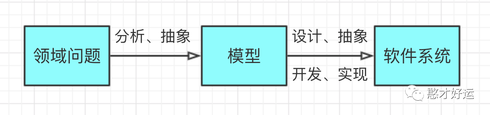
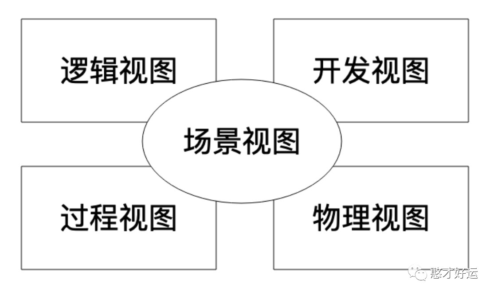
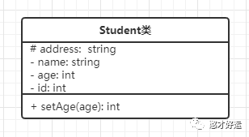
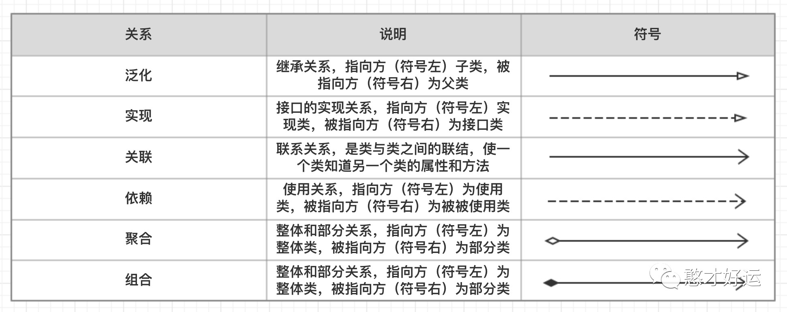
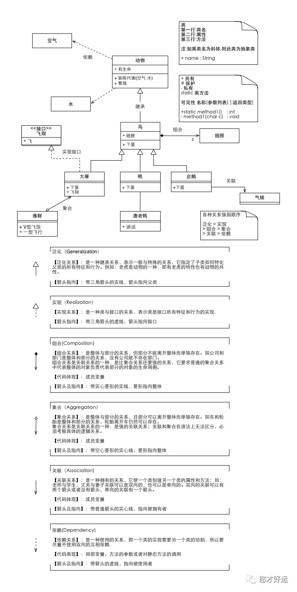
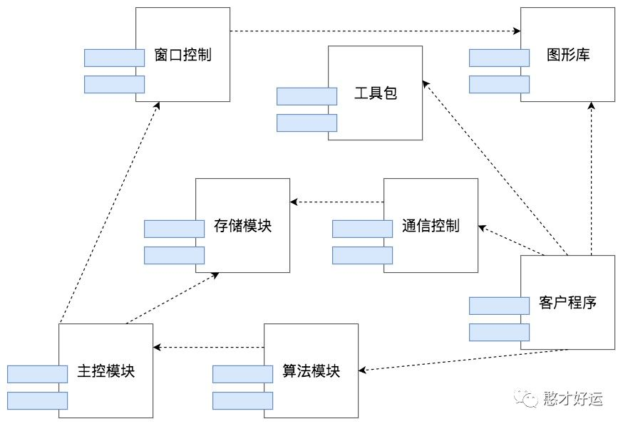
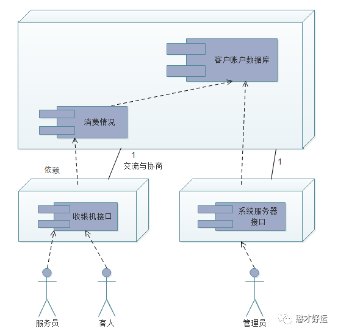
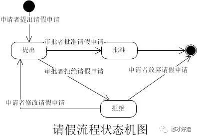
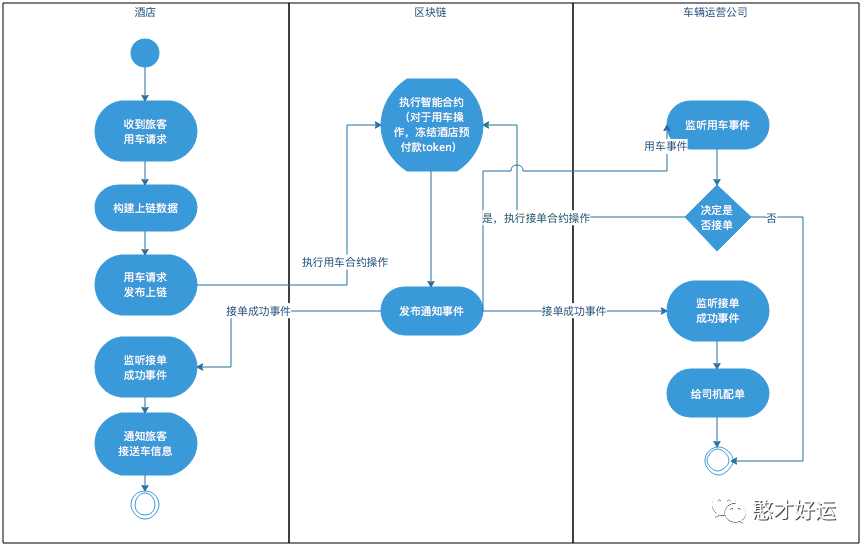

软件建模
软件建模就是为要开发的软件建造模型。通过建模，我们可以把我事物的本质规律和主要特征，正确建造模型和使用模型，以防在各种细节中迷失方向。软件系统庞大复杂，我们可以抽象软件系统的主要特征和组成部分，在软件开发过程中依照模型的约束开发，系统整体的格局和关系就会可控，相关人员从始至终都能清晰了解软件的设计蓝图和当前的进展，不同的开发工程师会很清楚自己开发的模块和其他同事工作内容的关系与依赖，并按照这些模块开发代码。
在软件开发中，有两个客观的存在，一个是我们要解决的领域问题，需要对相关的业务进行抽象梳理。比如我们要开发一个在线电子商务网站，那么客观的领域问题就是如何做生意，卖家如何管理商品、管理订单、服务用户，买家如何挑选商品，下订单、支付等。对于这些客观领域问题的抽象就是各种功能及其关系、各种模块对象及其关系和各种业务处理流程。
另一个客观存在的就是最终开发出来的软件系统，这个软件系统是由哪些主要类组成等。这些类如何组织构成一个个的组件，这些类和组件之间的依赖关系如何，运行期如何调用，需要部署多少台服务器，服务器之间如何通信等。
如图，一方面我们需要对领域问题和软件系统进行分析、设计、抽象，另一方面，我们根据抽象出来的模型开发，实现出最终的软件系统。其中对领域问题和软件系统进行分析、设计和抽象的这个过程就是软件建模及设计。
4+1视图模型
软件建模比较知名的是4+1视图模型，准确的说，4+1模型不是一种软件建模工具和方法，而是一个软件建模方法的方法，基于建模方法论。4+1视图模型认为，一个完整的软件设计模型，应该包括5部分的内容：
1.逻辑视图：描述软件的功能逻辑，由哪些模块组成，模块中包括哪些类，其依赖关系如何。
2.开发视图：包括系统架构层面的层次划分，包的管理和依赖的系统与第三方的程序包。开发视图某方面和逻辑系统有一定的重复性；不同视角看到的可能是同一个东西，开发视图中一个程序包，可能正对应逻辑视图中的一个功能模块。
3.过程视图：描述程序运行期的进程、线程和对象实例，以及与此相关的开发、同步、通信等问题。
4.物理视图：描述软件如何安装并部署到物理的服务上，以及不同的服务器之间如何关联、通信。
5.场景视图：针对具体的用例场景，将上述4个视图关联起来，一方面从业务角度描述功能流程如何完成，一方面从软件角度描述相关组成部分如何互相依赖和调用。
1
UML
20世纪90年代，软件行业诞生了UML（Unified Modeling Language，统一建模语言），一种涵盖软件设计开发所有阶段的模型化与可视化支持的建模语言。从诞生至今，软件先驱们一直在不懈地努力，使软件系统设计从不可直观感受触摸的抽象思维空间向现实空间进行投影。大学里的机械制图课程中的三视图，是观察者从三个不同位置观察同一空间几何体所画出的图形，是正确反应物体长宽高投影的工程图。UML是一种类似工程设计领域中三视图的尝试，但却又远没有达到三视图的精准，没能在工程实施领域内广泛流行起来，但是在分析与设计软件系统时，UML还是能够提供很好的思路。
三视图中，有些部分是重复的，而正是这些重复的部分将机械零件的不同视角的细节关联起来，形成一个完整的结构。软件建模也是如此，用多个视图描述软件模型也会重复，正是通过这些重复，才将软件的各个部分关联起来，对软件整体形成完整认识。
在实践中，通常用来进行软件建模画图的工具是UML，建模时也不一定把5种视图都画出来，因为不同软件类型其特点和设计关注点各不相同，只要能够向相关人员准确传递出自己的设计意图就可以了。
使用UML分析与完成设计文档
4+1视图模型很好地向我们展示了如何对一个软件的不同方面用不同的模型图进行建模与设计，以完整描述一个软件系统的业务场景与技术实现。但是软件开发是有阶段性的，在不同的开发阶段用不同的模型图描述业务场景和设计思路，在不同阶段输出不同的设计文档。
软件建模与设计过程可以拆分成需求分析、概要设计和详细设计三个阶段。UML规范包括了十多种模型图，常用的有7种：类图、序列图、组件图、部署图、用例图、状态图和活动图。下面讨论如何画这7种模型图，以及如何在需求分析、概要设计和详细设计三个阶段使用这7种模型输出合适的设计文档。
类图
类图是最常见的UML图形，用来描述类的特性和类之间的静态关系。
一个类包括三个部分：类的名字、类的属性列表和类的方法列表。类之间有6种静态关系：泛化(继承)、实现、关联、依赖、组合和聚合。把相关的一组类及其关系用一张图画出来，就是类图。比如现在定义student类如下：
1 | class student { |
可以看出在UML类图中，类由三部分组成：
类的名字：每个类都应该有一个名字，如果是抽象类就用斜体显示
类的属性：一般来说也就是类的成员变量，一个类可以有很多个属性，也可以没有属性
类的方法：一般来说也就是类的成员方法，一个类可以有多个方法，也可以没有方法
UML规定类的操作表示方式为：可见性 名称(参数列表)[:返回类型]，参数列表表示方法的参数，其语法与属性的定义相似，返回类型是一个可选项，表示方法的返回值类型，依赖具体的编程语言。其中属性或方法前面的(+，-，#)符号表示了这个属性或方法的可见性，并且有以下对应关系：
+：表示public属性或方法
-：表示private属性或方法
#：表示protect属性或方法
下图为标准类图关系类型的定义：
上述的描述过于抽象，我们通过下面的例子来辅助理解一下：
类图主要是在详细设计阶段绘制，如果类图已经设计出来了，那么开发工程师只需要按照类图设计代码就可以了。只要类方法的逻辑不是很复杂，不同的工程师实现出来的代码几乎是一样的，这样可以保证软件的规范统一。在实践中，我们通常不需要把一个软件的所有类都画出来，把核心的有代表性的、有一定技术难度的类图画出来就可以了。
时序图
UML类图之外，另一种常用的图就是时序图，类图描述类之间的静态关系，时序图则用来描述参与者之间的动态调用关系。
每一个参与者都有一条垂直向下的生命线，这条线用虚线表示，而参与者之间的消息也从上到下表示其调用的前后顺序关系，这正是时序图这个词的由来。每个生命线都有一个激活条，就是图中的细长矩形条，只有在参与者活动的时候才被激活。
时序图通常用来表示对象之间的交互，这个对象可以类对象，也可以是更大粒度的参与者，比如组件、服务器、子系统等等。总之，只要是描述不同参与者之间交互的，都可以使用时序图，也就是说在软件设计的不同阶段，都可以绘制时序图。一般技术书籍中都会通过时序图来描述某项功能的启动过程，比如经常的Tomcat启动时序图分析，网络上有很多，这里就不再贴图作为范例。
组件图
组件是比类粒度更大的设计元素，一个组件中通常包括很多个类。组件图有的时候和包图的用途比较接近。组件图通常用来描述物理上的组件，比如一个JAR、一个DLL等等。在实践中，我们进行模块设计的时候更多的是用组件图。
组件图描述组件之间的静态关系，主要是依赖关系，如果想要描述组件之间的动态调用关系，可以直接使用组件时序图，以组件作为参与者，描述组件之间的消息调用关系，因为组件的粒度比较粗，通常用来描述和设计软件的模块及其之间的关系，需要在设计的早期阶段就要绘制出来，一般用于概要设计 阶段。
部署图
部署图描述软件系统的最终部署情况，比如需要部署多少服务器，关键组件都部署在哪些服务器上。
部署图是软件系统最终物理呈现的蓝图，根据部署图，所有相关者都能清晰地看到最终运行的系统在物理上是什么样子，和现有的系统服务器的关系，和第三方服务器的关系，根据部署图，还可以估算出服务器和第三方的采购成本。部署图和网络拓扑图相似，都是在物理层次上做整体的系统规划，但是部署图功能更强大，可以继续细化设计。
因此部署图是整个软件设计模型中，比较宏观的一种图，各方可以讨论对这个方案是否认可。只有对部署图达成共识，才能继续后续的细节设计，部署图主要用在概要设计阶段。
用例图
用例图主要用在需求分析阶段，通过反映用户和软件系统的交互，描述系统的功能需求。当需要对系统整体或者某一部分功能进行行为建模时，就能够使用用例图了。
主角表示执行者(Actor)，其表示的是与当前系统交互交互的人或者其他系统。
用例能够表示系统能够为执行者提供什么功能。
用例是以动词加名词的形式，也就是动宾结构。
外边框表示系统边界，要注明是什么系统，外边框可以不画，个人建议画上比较清晰。
线条有三种：无箭头的，指向用例的箭头，指向执行者的箭头。
箭头可以有两种解释：
数据流向：箭头指向用例，说明向系统输入数据。箭头指向执行者，说明系统输出数据。
谁启动谁：箭头指向用例，说明启动系统中某一模块。箭头指向执行者，说明系统启动另一系统。
执行者之间只有一种关系，那就是泛化关系；
用例之间有三种关系；
include关系，表示用例4有用例5的功能，也就是有什么功能；
extend关系，表示在用例6的基础上用例7有什么功能，也就是在什么基础上；
继承关系，表示用例9继承抽象用例8什么功能，抽象用例是不能被实例化的；
状态图
状态图用来展示单个对象生命周期的状态变迁。业务系统中，很多重要的领域对象都有比较复杂的状态变迁，比如账号，有创建状态、激活状态、冻结状态、欠费状态等等各种状态。此外，用户、订单、善品、红包等这些常见的领域模型都有多种状态。
状态机图描述的是围绕某一事物状态变化的图。它也是三大流程分析利器之一。它和活动图的区别在于，活动图是描述事物发生的流程，是多个角色参与的，而状态机描述的是事物的状态变化，并没有角色这个概念。UML状态图可以很好地解决这一问题，一张状态图描述一个对象生命周期的各种状态及其变迁的关系。
活动图
活动图主要用来描述过程逻辑和业务流程。UML中没有流程图，很多时候，人们用活动图来代替流程图。活动图和早期流程图的圆形元素也很接近，实心圆代表流程开始，空心圈代表流程结束，圆角矩形表示活动，菱形表示分支判断。活动图还引入了一个重要的概念–泳道，活动图可以根据活动的范围，将活动领域、系统和角色等划分到不同的泳道中。活动图比较有普适性，可以在需求分析阶段描述业务流程，也可以在概要设计阶段描述子系统和组件交互，还可以在详细设计阶段描述一个类方法内部的计算流程。
在需求分析阶段，主要是通过用例图来描述系统的功能与使用场景；对于关键的业务流程，可以通过活动图描述；如果在需求阶段就提出要和现有的某些子系统整合，那么可以通过时序图描述新系统和原来的子系统的调用关系；可以通过简化的类图进行领域模型抽象，并描述核心领域对象之间的关系；如果某些对象内部会有复杂的状态变化，比如用户、订单这些，可以用状态图进行描述。
在概要设计阶段，通过部署图描述系统最终的物理蓝图；通过组件图以及组件时序图设计软件主要模块及其关系；还可以通过组件活动图描述组件间的流程逻辑。
在详细设计阶段，主要输出的就是类图和类的时序图，指导最终的代码开发，如果某个类方法内部有比较复杂的逻辑，那么可以用画方法的活动图进行描述。
小结
UML 建模可以很复杂，也可以很简单，简单掌握类图、时序图、组件图、部署图、用例图、状态图、活动图这 7 种模型图，根据场景的不同，灵活在需求分析、概要设计和详细设计阶段绘制对应的模型图，可以实实在在地做好软件建模，搞好系统设计。
关注【憨才好运】微信公众号，了解更多精彩内容⬇️⬇️⬇️